Lo que deberías saber es...
El CrossFit es un tipo de entrenamiento de ejercicios funcionales, constantemente variados, ejecutados a alta intensidad. Es un programa de fuerza y acondicionamiento físico total, que se basa en el incremento de las diez capacidades físicas más reconocidas por los especialistas en el entrenamiento deportivo con pesas. Durante la ejercitación se busca desarrollar la fuerza y el tono muscular e incrementar la funcionalidad de los músculos para repetir los movimientos en distintas situaciones de la vida real.
DESCRIPCION: El crossfit es una técnica de entrenamiento, que encadena diferentes ejercicios físicos de forma intensa, sin tiempo y sin pausa. El principio de este tipo de ejercicio es el de entrenar el cuerpo ejerciendo diferentes disciplinas al mismo tiempo, tales como la halterofilia, el atletismo, la gimnasia y sobre todo la resistencia. Este programa se compone de deporte de resistencia y de diferentes actividades físicas. Se basa en el trabajo de diferentes capacidades y habilidades: resistencia cardiovascular y respiratoria, resistencia muscular, fuerza, flexibilidad, potencia, velocidad, agilidad, psicomotricidad, equilibrio, y precisión. Todas estas actividades intervienen enérgicamente para una puesta en forma eficaz.
CROSSFIT EN EL MUNDO: Más allá del entrenamiento físico, esta disciplina y el crossfit en general se centran en la cuestión mental. Se trata pues de un modo de vida que se debe adoptar. La mayor ventaja del crossfit es su eficacia frente al condicionamiento físico en general, combinando el trabajo cardiovascular y el trabajo muscular. Se puede realizar de manera individual o en grupo, y las sesiones suelen ser cortas, variadas y adaptables en función del nivel de cada participante. Este programa desarrolla las cualidades fisiológicas como la resistencia, la flexibilidad, la fuerza, la velocidad, la precisión y el equilibrio. El cross-fitness se puede practicar por todos aquellos que desean tener un físico de atleta. Sin embargo, el cross-fitness puede ser peligroso si se practica sin encuadre, puesto que ciertos movimientos presentan riesgos, si previamente no ha habido ningún tipo de aprendizaje.


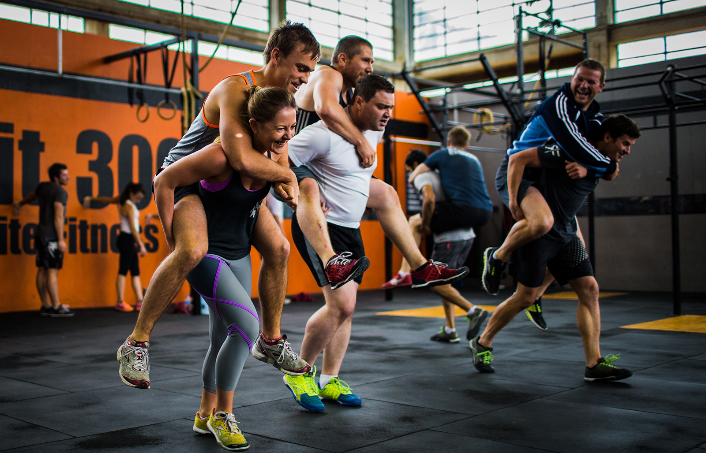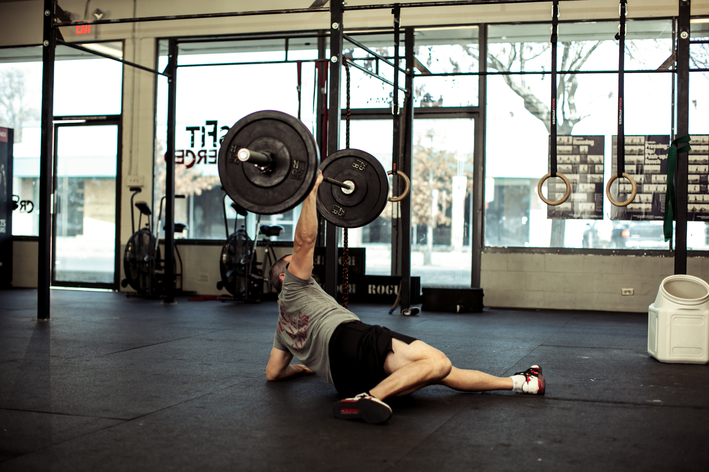
¡INSCRIBITE AL CROSSFIT!
Los circuitos de Crossfit se pueden llevar a cabo:
Cualquier lugar, simplemente lo que se busca es la concentración en el ejercicio y la actividad que estamos llevando a cabo. Para ello evitaremos todo tipo de distracción que pueda alejarnos de nuestro objetivo. Para conseguir esto las rutinas de Crossfit están diseñadas y programadas a modo de circuito para acabar un ejercicio y comenzar a realizar el otro para así no perder la intensidad de esta actividad.
Para conseguir que esta modalidad de entrenamiento sea efectiva se incorporan ejercicios de diferentes modalidades como correr, saltar, ejercicio olímpicos, escalada, levantamiento de peso… Es cierto que dicho así suena un poco fuerte, pero existen rutinas y ejercicios adaptados a todos los niveles, aunque es necesario que las personas que se decanten por esta forma de entrenamiento tengan una base previa para poder hacer frente a todas las pruebas que se pondrán por delante.
Los ejercicios se alternarán de tal manera que nos permitan recuperarnos de cada uno de ellos, ya que se combinan ejercicios que requieren una explosión fuerte por parte de nuestro cuerpo para poder hacer frente a las resistencias a las que nos enfrentamos, y otros en los que la intensidad será menor, y nos permitirá recuperar nuestro estado habitual poco a poco para luego volver a ejecutar un ejercicio de máxima intensidad.
Es importante que tengamos en cuenta que en ningún caso hay que ser ni deportista de élite ni nada por el estilo para poder ejecutar este tipo de entrenamiento, sino que simplemente se trata de una forma distinta de trabajar nuestro cuerpo. Todos los ejercicios se asemejarán a movimientos habituales en nuestro día a día, ya que lo que se busca es que sea lo más natural posible. A esto hay que sumar la motivación que nos supone entrenar en grupo con personas que están haciendo a la vez que nosotros la misma actividad.
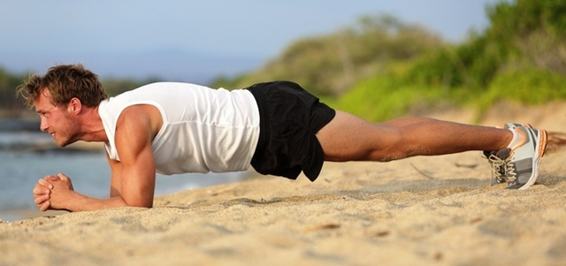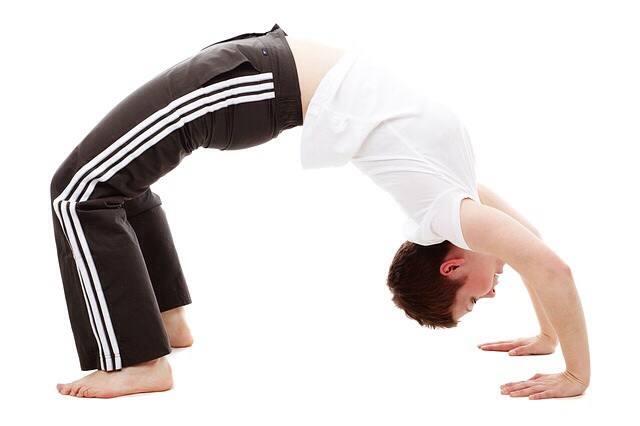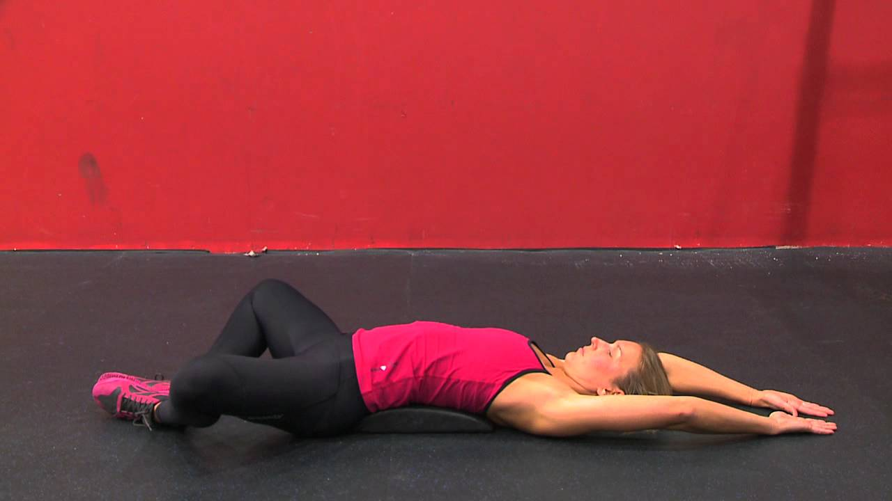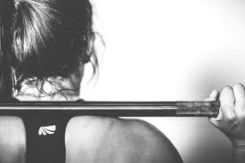
Algunos practicantes del Crossfit:
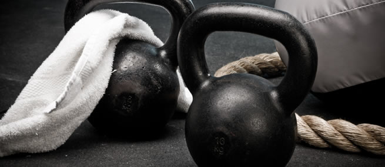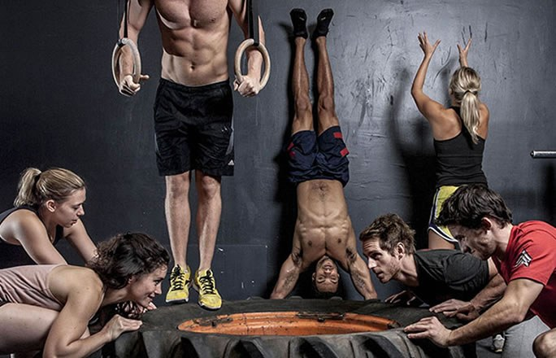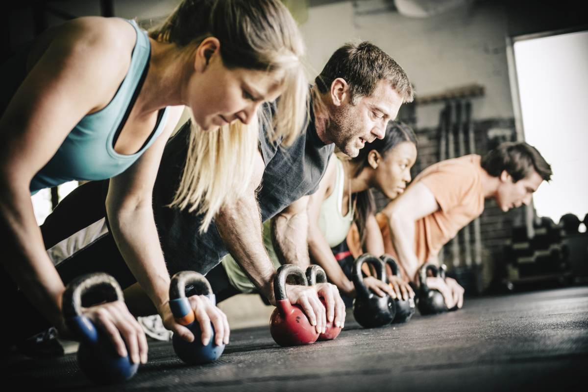

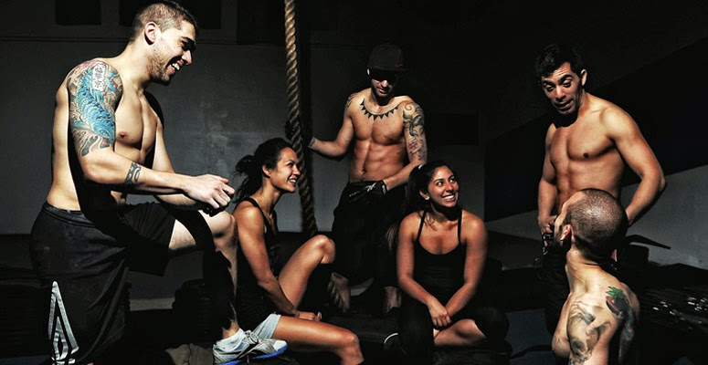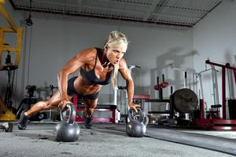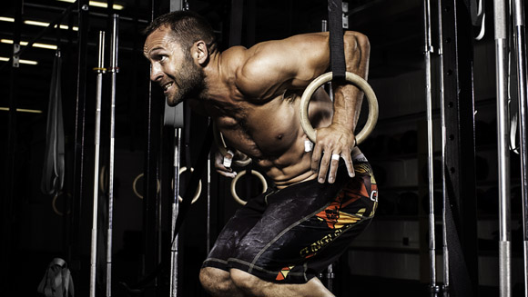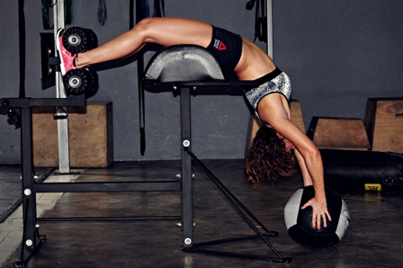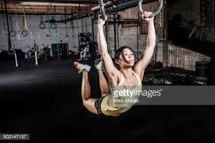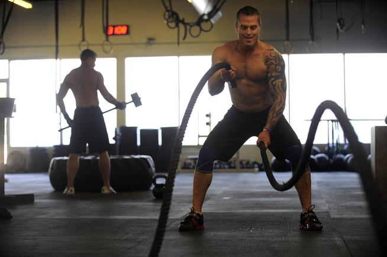

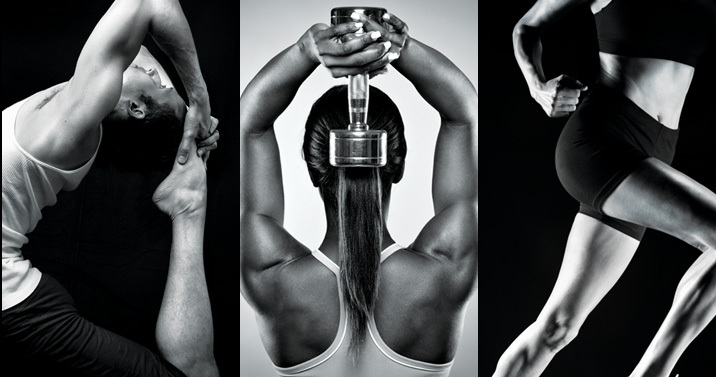
Algunos requsitos para la practica del Crossfit son:
No padecer enfermedades del corazon
No padecer presion alterial
No fumar
No padecer diabetes
Procurar no estar bajo algun tipo de tratamiento
No tener problemas en areas como: Rodillas, espalda baja, cuello/hombros, cadera/pelvis y/u otros padecimientos
Llevar ropa comoda para la practica
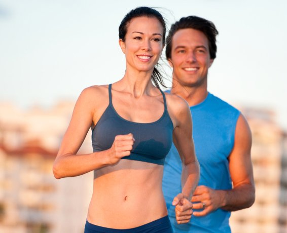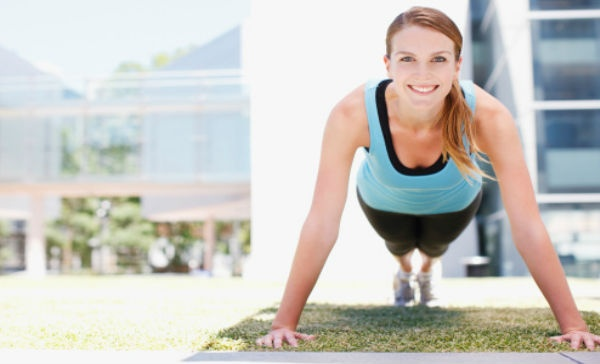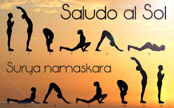
¡ESTAR LO MAS SANO POSIBLE!